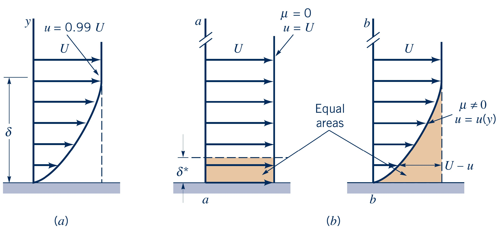

Fluid Mechanics
Unconfined boundary layers
Lecturer: Jakob Hærvig
Slides by Jakob Hærvig (AAU Energy) and Jacob Andersen (AAU Build)
Introduction to boundary layers
What: Boundary layers are thin regions adjacent to a solid boundary
Why: In these regions, the fluid velocity changes from zero at the wall (due to the no-slip condition) to the free stream velocity away from the wall.

Visualisation of boundary layer flows
Boundary layer thickness
Definition: The distance from the wall where $u/U_{\infty} = 0.99$
It is defined as:
δ = y | u(y) = 0.99 U∞
